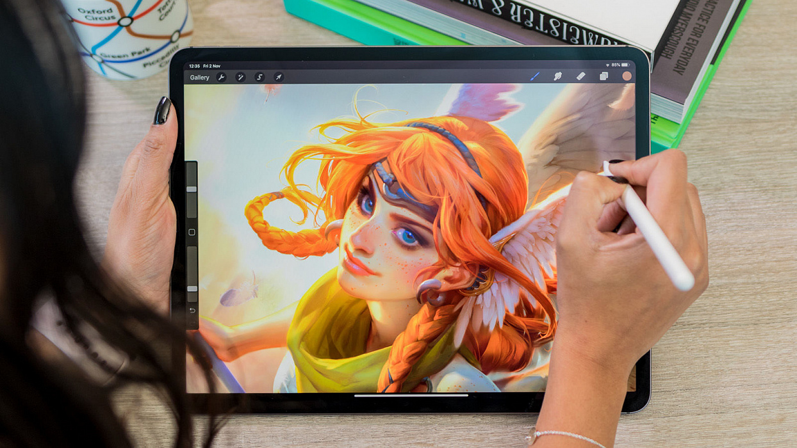

Рисование на графическом планшете
Что требуется для рисования на графическом планшете
Графический планшет со стилусом
Приложения для рисования
Пример рисунка на графическом планшете

Сравнительная таблица графических планшетов